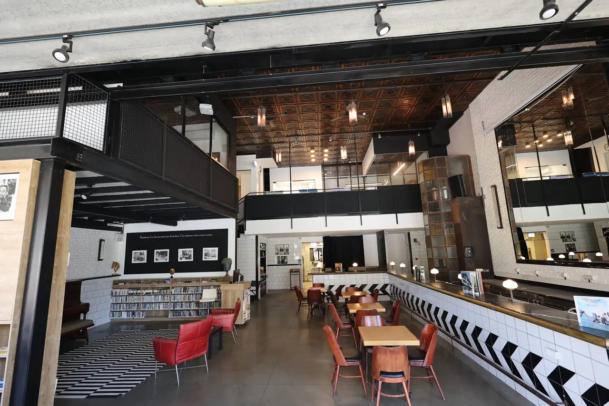
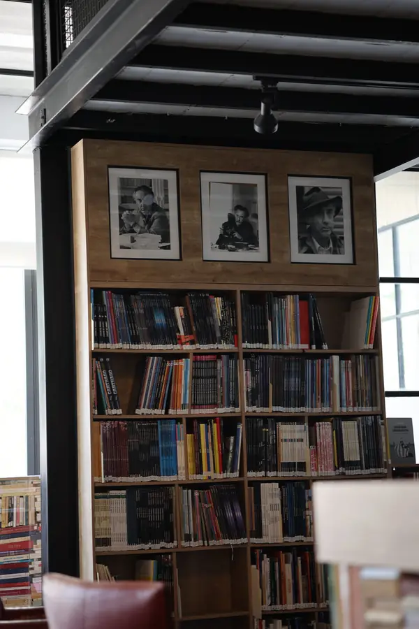

Les happenings
Des soirées uniques, places limitées. Inscrivez-vous pour recevoir les dates en avant-première.
Rejoindre la liste →
Café Bistro Romain Gary · 35 rue Hillel · Jérusalem
Un bistrot parisien au cœur de l'Institut français Romain Gary, cacher mehadrin. Une adresse pour se retrouver, prendre le temps et prolonger la conversation.
01 / Le lieu
Une façade bleue sur la rue Hillel, un grand comptoir, une mezzanine. Le Café Romain Gary partage son adresse avec l'Institut français : un point de rencontre entre la ville et la culture française.



02 / En images
Touchez une vidéo pour la lancer avec le son. Touchez à nouveau pour la mettre en pause.
03 / Soirées & événements
Des soirées uniques, places limitées. Inscrivez-vous pour recevoir les dates en avant-première.
Rejoindre la liste →Anniversaire, enterrement de vie de jeune fille ou de garçon : le lieu, le menu et l'ambiance, pensés pour votre groupe. Envoyez la date et le nombre de personnes.
Demander une date →Petits-déjeuners, plats de bistrot et viennoiseries à la parisienne. Fermé le Shabbat.
Réserver →04 / Réservation
Remplissez le formulaire : le message s'ouvre directement dans le WhatsApp du café, qui confirme votre réservation.
Horaires du jour : sur WhatsApp ou au 054-665-7655.